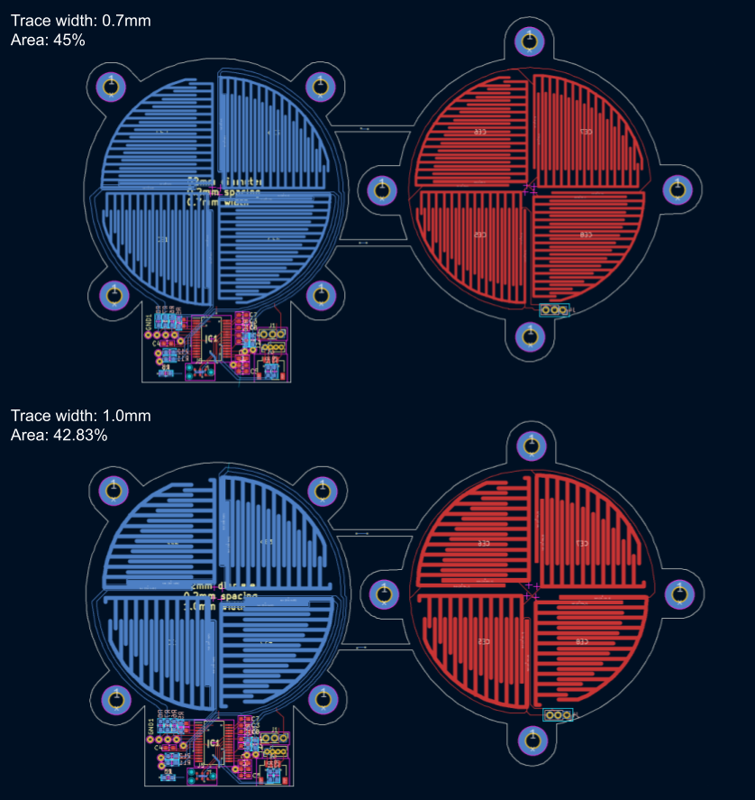
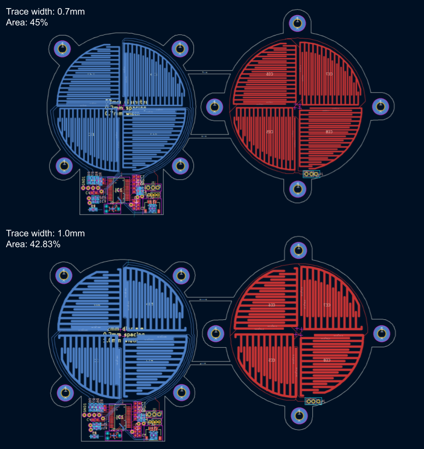

OreoFT: Capacitive 6-Axis Force/Torque Sensor
OreoFT is a low-cost, maker-accessible capacitive 6-axis force/torque sensor for robotics,
education, and research. At $17.72 per unit, it uses only standard PCB fabrication and
3D printing, providing an affordable alternative to commercial FT sensors, which are expensive,
bulky, and fragile.
OreoFT uses a stacked circular PCB with interlocked comb electrodes to measure normal and
shear forces across all 6 degrees of freedom. Dual sensing modes are enabled through
programmable grounding and shielding patterns.
A PSoC 4100 MCU with CAPSENSE acquires 16-channel capacitance data at 16-bit resolution.
An ESP32-S3 provides low-latency wireless communication via ESP-NOW, with calibration
and real-time visualization done on a host PC using Python.
Sixteen sensor variants were evaluated across dielectric materials, trace widths, spacings,
and diameters. The sensor withstands loads exceeding 400 N, with neural network calibration
models achieving the best performance.
Printed Circuit Board
Capacitive Sensing
Robotics
PCB Design
Python
C


 
